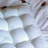

miss_geek.txt
 sex
sex fucking, fucked, fucking, fucking, fuck, fucked, fucking
 passivity
passivity bed, lazy, bed, bed, slow, rest
 temporal_references
temporal_references minute, months, ago, now, ever, everything, time, today, weekend, early, past, today, then, today, time, hour, month, year, ago, now, early, when, every, once, while, tonight, tonight, early, then, hour, time, sometimes, sometimes, sometimes, hour, when, old, when, today, today, time, now, week, today, while, now, during, week, hour, minute, minutes, when, tonight, then, now, when, timed, every, time, now, everything, ever, now, everyone, everyone, now, then, ever, today, now, old, tonight, while, every, sometimes, everyone
 water
water shower, rain, rain, wet, wet, pond, swamp, swamp
 social_behavior
social_behavior agree, able, able, mention, called, called, said, able, met, thanks, able, able, conversation, confirmed, able, said, offered, told, say, asked, told, said, told, tell, say, said, say, help, talked
 instrumental_behavior
instrumental_behavior used, finish, make, finish, make, make, work, building, delivered, work, working, working, work, work, work, make-up, purchased, buy, try, work, work, money, make, spending, buy, work, try, work, paying, work, work, try, try, found, found
 restraint
restraint stopped, must, stop, control, stop, must, limits
 orality
orality food, drink, coffee, beer, drink, drink, sucks, drink, drink, drink, drink, drink, drinking, beer, coffee, drink, drink, drink, drink, drink, cooking, cook, drink, drink, drink, drink, appetite, drink, drink, beer, drink
 hard
hard rock, hard, rocking, rock, rock, rocks, hard
 anxiety
anxiety dangerous, avoid, worrying
 vision
vision see, see, see, see, watched, see, pictures, see, looks, looking, see, picture, see, see, film, looking, blueberry, watching, watch, watch, grey
 voyage
voyage drive, drive, trekking, drive, cruise, driving, driving
 consciousness_alteration
consciousness_alteration sleep, awake, sleep, wake, crazy, crazy, wake, nightmare, wake, sleeping, asleep, sleep, sleep, nap, waking, woke, sleep, sleep, wake
 abstraction
abstraction why, real, themselves, thinking, believe, think, possible, them, believe, supposed, supposed, different, something, rational, plan, guess, thinks, except, know, think, them, thinking, knows, believe, know, almost, something, think, possible, fact, why, real, think, guess, guess, important, reason, sure, think, fact, except
 fire
fire tropical, hot, hot
 sadness
sadness sorry, sad, miserable, lonely, sorry, whine
 moral_imperative
moral_imperative should, right, should, should, right, right, should, should, right
 unknown
unknown strange, strange, incredibly, mysterywhteboy
concreteness
out, point, over, point, place, at, closed, closed, here, overnight, here, out, level, out, away, back, at, longer, long, at, long, here, nearly, off, long, out, out, over, out, here, out, here, middle, where, here, side, out, between, closed, back, at, out, out, back, distant, apartment, apartment, close, ahead, here, apartment, along, place, at, out, outside, near, off, out, where, back, middle, surrounded
 glory
glory wondering, wondering, wonder, great, wonder, great, wondering
 aggression
aggression conflict, irritating, argue, shoved, disagreements, angerasbeauty, break, fighting, kill, complain, complain, break, war
 affection
affection like, like, like, likely, like, like, appreciated, love, love, friend, like, like, likely, like, like, love, like, like, friends, marry, like, lovin, like
 soft
softball
 chaos
chaos ruined, chaos
 odor
odor smell
 anality
anality shit, piss, shit
 positive_affect
positive_affect happiness, happy, excited, fun, funny, happy, happy, celebrate, fun
 diffusion
diffusion fog
agree, able, able, mention, called, called, said, able, met, thanks, able, able, conversation, confirmed, able, said, offered, told, say, asked, told, said, told, tell, say, said, say, help, talked